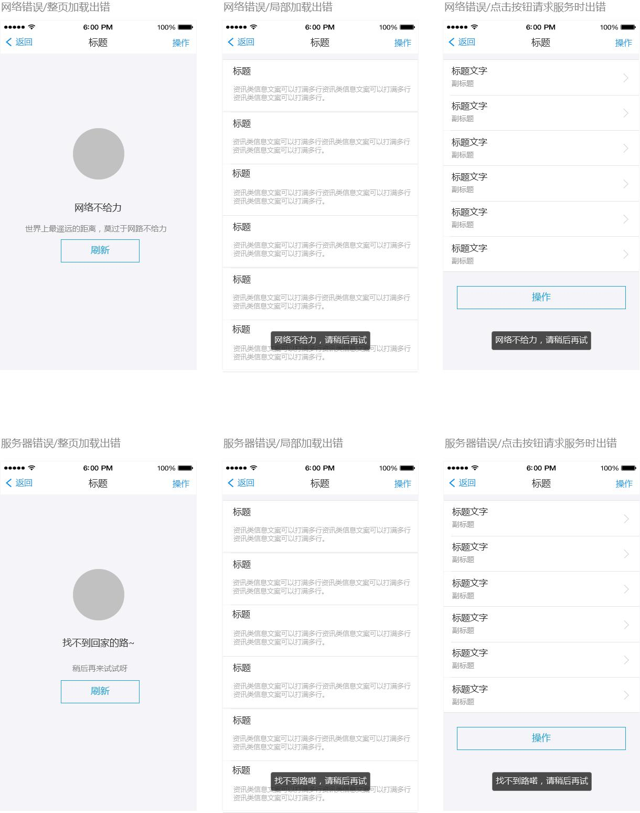
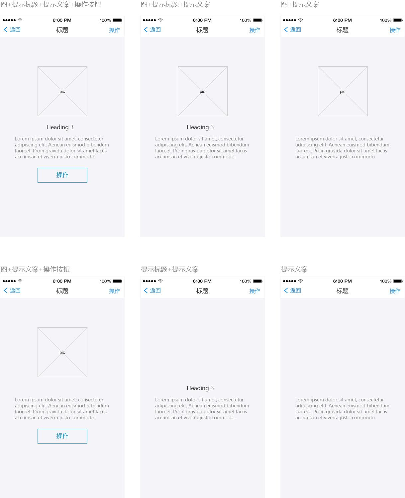
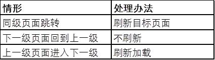
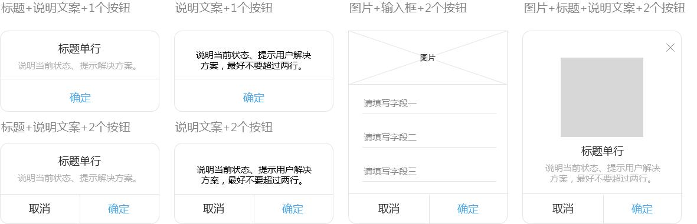
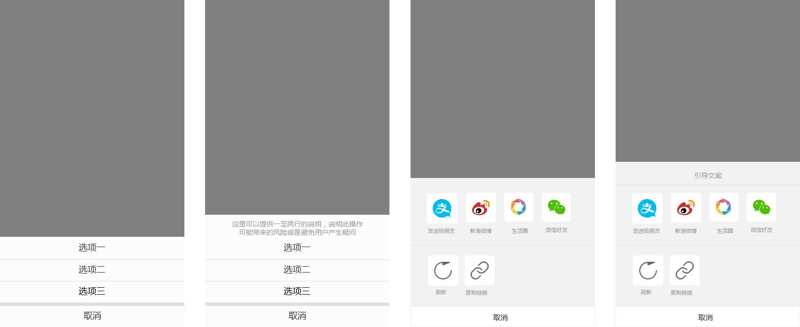
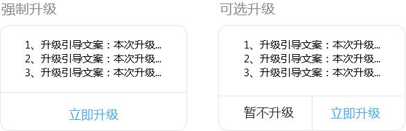

分享人：赵跃
1.了解一部分搭建App 1.0版时需要做好的全局设计
2.了解设计功能简单的初期版本时如何在工期紧张的条件下保证App的整体体验
在做1.0版App时，项目组为了控制成本、尽快达成里程碑，往往是功能开发的优先级较高，体验的优先级相对较低。
但是如果PM的经验不足，一味做功能、赶进度，很容易忽略App全局的一些体验设计，给项目后期迭代挖坑；
另一方面，如果没有对这些基础体验进行考虑，研发人员在开发过程中会经常提出疑问，在一问一答甚至是返工修改的过程中反而降低了效率，延长了项目的周期。
接下来我将以iOS的交互设计举例，安卓的设计根据material design的原则转化即可，又或者和iOS共用一套设计也无妨。
大家都知道，越是复杂的业务，在系统运行过程中出错的情况就越多。
出于用户体验的考虑，我们不能把所有的错误都告诉用户。
即使是必须告诉用户的，也应该尽量使错误看起来友好一点。
除了业务方面的错误外，移动端通常只需要给用户两类错误——网络错误和服务器错误。
不少人认为多数用户不理解何为服务器错误，而且在成熟的公司和项目上，服务器出错导致前端无法访问的情况并不多，所以干脆连这类报错都省了。
个人认为还是应该区分开的，因为一旦有用户、运营或者客服反馈时就能快速定位到是哪一类错误。
网络错误和服务器错误在操作过程中又区分为加载整页时报错、局部加载时报错和点击按钮时报错。
第一个和第三个好理解，第二个（局部加载报错）主要指的是上拉页面加载更多时的错误。
整页加载出错一般需要有单独的提示页面，局部加载报错和点击按钮请求服务时出错一般给个toast提示或者弹窗提示即可。
大家思考下：服务器错误情况下该如何提示？

在操作App的过程中，不可避免会遇到页面内没有数据或者页面出错的情况。
这时候需要在页面内显示出空状态，告诉用户为什么出现这种情况、下一步需要做什么。
空状态也分整页为空、局部为空两种类型，除了出现的位置不同外，在处理方式上可以采取一样的办法。
空状态提示一般是图片、提示标题、提示文案和操作按钮的组合。
如何根据实际需要进行搭配，最好在第一版时就确定下来。
虽然到了后期也能添加新的版式设计，但是对于开发人员来说，有可能前期就做了几个通用的版式，如果要临时添加就要看你的人品和RD是否积极配合了。
常见的有如下几种搭配：

如果页面内容较少，可以一次性全部加载完；内容多的情况下，需要做分页，则分页内需要定义好每次加载多少条数据。
页面整体加载通常在页面中部使用动画+提示文案，下拉刷新、上拉加载更多则在页面顶部和底部添加相关提示。
当滑动页面到了底部没有更多时还也可以再增加一个提示，典型的如支付宝的“我是有底线的”。
此外，现在有很多App都在加载中使用带品牌标识的gif图，这在第一版App中可以暂时不考虑，只要设计了全局加载并让RD做了开发，图片可以等到后期再替换。
页面的整体刷新会影响锚点发挥作用。
例如，用户拖动页面中的列表，到了中部的某个位置，此时用户切换到其它页面然后再回到原来的页面，如果页面刷新了就会回到页面的顶部，那么用户还得拖动页面才能接着看列表中的内容。
在一些情况下，这种体验是非常不好的。所以需要定义好各个页面直接跳转时刷新还是不刷新。给一个参考思路，可以应用到整个App的所有页面，也可以具体问题具体分析。

在App中，弹窗样式也是可以复用的。
有经验的客户端RD会把弹窗做成global，这样一旦需要在大版本迭代中对弹窗UI样式进行修改时，只改动global里的设计就能完成App里大部分的弹窗样式。
所以基于这点考虑，在1.0版本时可以把后期可能会用到的所有弹窗样式都列举出来给RD。
各种样式说到底是图片、标题、说明文案、输入交互和按钮的组合。
常见的弹窗样式见下方，其中没有交互（输入项）的dialog会在App中占大头，其余的也可以让RD在项目过程中遇到时再做特殊处理。

屏幕底部弹出的操作面板本质上是另一种弹窗，事实上有很多同样的功能在不同的App上有用弹窗实现的也有用操作面板实现的。
这里且不说复杂的操作面板——因为一旦功能复杂肯定是要做特殊处理的——就说最常见的多选功能的操作面板。
需要注意的是，带有说明标题和不带说明标题的面板对于RD来说是两个组件，需要做区分处理。

最后说说App的升级引导。项目组辛苦做出App，第一个版本发布后用户量上去了，但是在后台看到各种吐槽。
这时急忙迭代开发出第二个版本，却发现第一个版本没有做升级引导——顿时奔溃有木有啊。
所以建议，但凡是要发布，那就必须有升级的机制，否则客户不更新PM、RD哭死也没用。
升级无非分为强制升级和可选升级两种。
对于安卓来说，因为各个市场放得较松，所以可以在发布新版本时由App直接先把apk下载到本地（一般是在wifi环境下），然后再询问客户是否要升级；也可以先询问然后再由客户决定是否下载。
苹果App Store大家懂得，对开发者的约束较强，不允许开发者引导用户下载更新。
所以如果直接把升级提示的逻辑写在ipa包里，并且审核时被扫描到，苹果是不会允许上架的。
所以只能通过后台控制绕过这个坑：
1.升级提示逻辑不能写在本地；
2.先发包审核，通过审核后再由服务端控制，在客户端弹窗引导升级。

以上所述的基本上都是产品设计层面的基础搭建。
除了这些之外还有缓存机制、日志记录、消息推送、埋点等需要考虑。
以上每一项单拿出来都可以写很多，以后看情况再分享。
1.0版App如何做全局产品设计—————人人都是产品经理